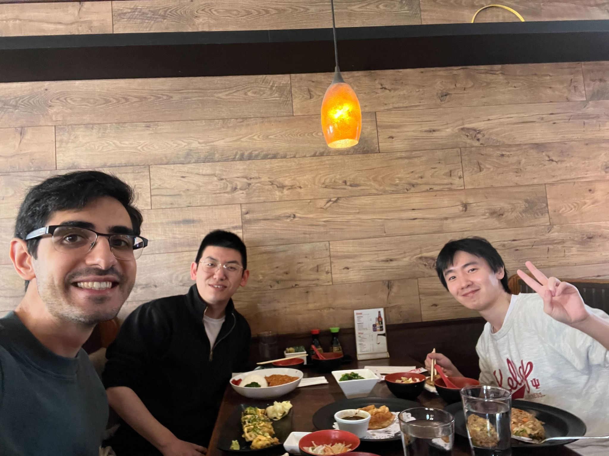

This past weekend, I had the wonderful opportunity to attend the Haring Symposium at Marketing Department @ Kelley School of Business! It was my first time participating in an event specifically designed for the academic development of PhD students, and I absolutely loved it. A warm thank you to the organizers, Sarang Sunder, Dr. Mansur Khamitov (PhD, MBA), Saang A Lee, Guangqi Dong, and everyone else who helped make it such a meaningful and well-organized event.
I had the pleasure of discussing the paper "Review Manipulation and Platform Policy: Evidence from Online Travel Agencies" by Liujie Qian, Zhexi Zhang, and Hongju Liu. It is an excellent piece of work tackling the important and timely topic of online review manipulation. The authors approached the problem from a fresh perspective and contributed valuable insights to the field by leveraging a compelling natural experiment setting. I really enjoyed reading it and hope my comments and suggestions were helpful. Looking forward to seeing it published soon!
The symposium offered a unique space to connect with fellow PhD students, learn about their research, exchange ideas, and share experiences about our journeys in academia. The invited faculty members and guest lecturers were incredibly insightful. It was both encouraging and grounding to hear from scholars who have someday been a PhD student and are now contributing so meaningfully to the field.
It was also a pleasure to attend my friend and cohort member Haonan Zhang present his fantastic joint work with Shirsho Biswas on "Does Online Shopping Affect Offline Price Sensitivity?" You nailed it!
Outside the academic sessions, the trip had so many other highlights for me. I had a great time chatting with fellow participants and getting to know them beyond just their research. The IU campus was absolutely beautiful, and I loved its lively vibe. Huge thanks as well to Guangqi Dong for his hospitality and kindness while hosting us.
